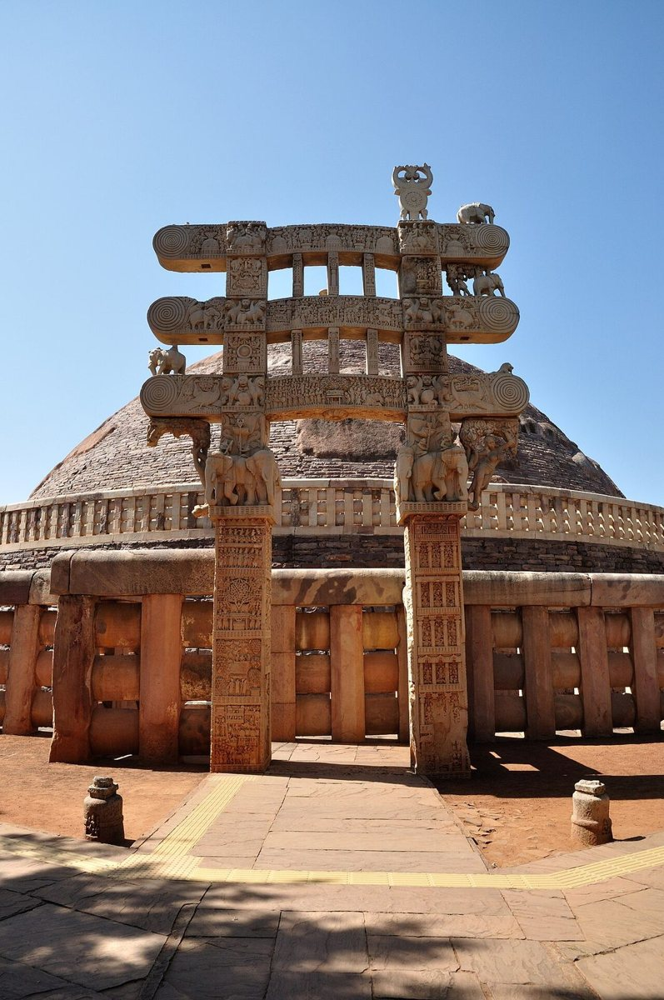
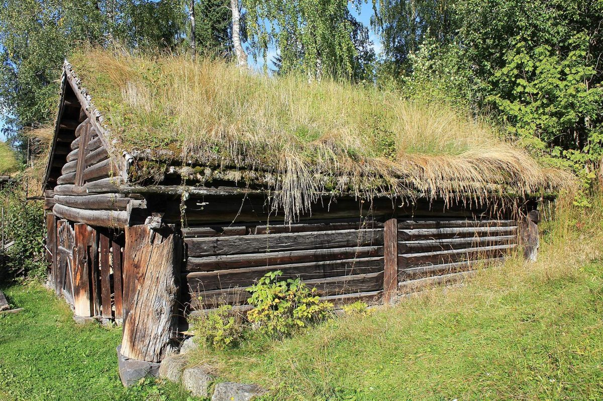
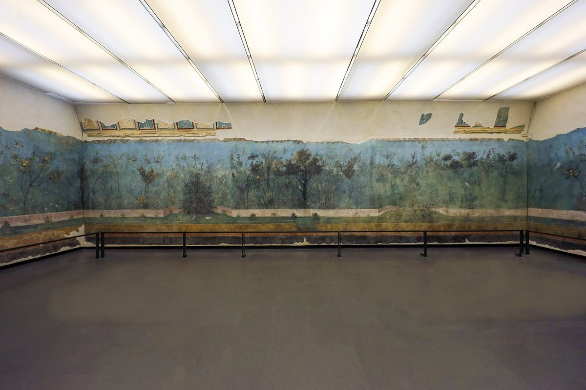
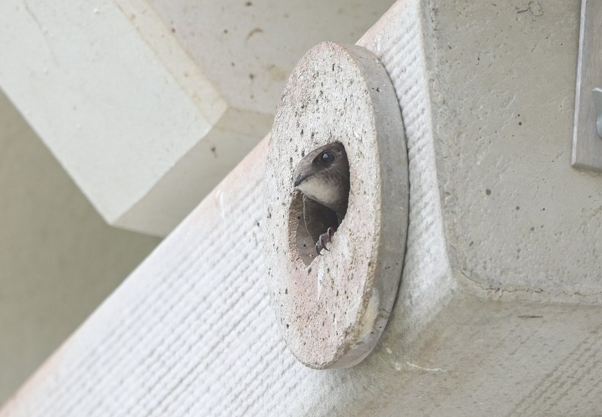

6.1 Trees Shade first, cooling second, and soil above all
Carved on a stone gateway at Sanchi, in central India, about two thousand years ago, is a picture of a building with a tree growing through it. It's a shrine for the tree under which the Buddha is said to have found enlightenment: a ring of pillars and a railing around the trunk, and the branches spreading out through the openings at the top. The building is there for the tree, not the other way round.

{kind=link}
That's a good way to begin a chapter about living things, because it's the attitude that works. A tree, a vine or a planted roof isn't a building material. It's a living thing with needs of its own, and it only gives you shade, cooling or beauty if you give it what it needs first. This lesson is about trees: what they really do for a building and a street, and what they need from the designer in return, which is mostly soil, water and care.
How it works
A tree does two things for the climate around it. The first, and the biggest, is shade. A dense crown stops most of the sunlight that falls on it, so the wall, the window or the pavement beneath it stays out of the sun. The effect on surfaces is large. In one study reported by the US Environmental Protection Agency, at two buildings, shade from trees cut the peak temperatures of walls and roofs by eleven to twenty-five degrees. And because the ground and the walls around you are cooler, you feel cooler, even where the air is hardly different.
The second is evaporation. A tree draws water up from the soil and lets it out through its leaves, and evaporating water carries heat away, as you saw in the chapter on water. Across a grove or a neighbourhood, that cools the air. The same EPA collection reports groves up to five degrees cooler than open ground at the peak, and suburbs with mature trees two to three degrees cooler than new suburbs without them.
How much depends on the climate. A study of 293 European cities compared the surface temperatures of tree cover and of dense city fabric. In central Europe, the trees were eight to twelve degrees cooler. In the south, with its hot, dry summers, the difference was only zero to four. Parks and lawns without trees cooled two to four times less than trees did. So count on the shade, and treat the evaporative cooling as a bonus that needs water, and that's weakest where the summers are driest.
Everything a tree does above ground depends on what it has below. Roots need soil loose enough to grow through, with air and water in it. But the ground under a city pavement is compacted hard on purpose, so that it can carry the paving and the traffic, and roots can't get through it. A street tree in a small pit is a tree in a pot. It grows until its roots fill the pit, and then it struggles.
How much soil is enough? A widely used rule, worked out from a tree's water needs by Lindsey and Bassuk in 1991, is about two cubic feet of soil for every square foot of ground under the crown. In metric, that's about 0.6 cubic metres of soil for each square metre of crown. A tree with a crown eight metres across needs about thirty cubic metres: a trench a metre deep, two metres wide and fifteen metres long. A pit one point two metres square and a metre deep holds under one and a half cubic metres, enough, by the same rule, for a crown less than two metres across.
Under a pavement, there are two main ways to give a tree that soil. The first is structural soil: crushed stone whose pieces lock together to carry the paving, with soil filling the gaps between the stones, where the roots can grow. The second is to hold the paving up, on a frame or on cells like stacked crates, and fill the space beneath it with ordinary loose soil. In one fourteen-month trial, trees grew best in loose soil under suspended paving, of the five treatments tested.
And a young tree needs water until its roots have spread, which takes years. Who will water it is a design question, as the examples show.
The best examples
In Brooklyn, New York, in 1997, trees were planted along one side of a street in structural soil: a trench about sixty centimetres deep and two metres wide, under granite pavers and concrete, with openings for the trunks. Across the street, trees went into an ordinary grass verge. Researchers measured them six and ten years later. The trees under the paving grew just as well as the trees in the grass, and fewer of them died: about eleven per cent, against about forty-one per cent in the verge, where the losses were put down to maintenance and repair work. The samples were small, but the lesson is useful: you can pave over a tree's roots, if the soil beneath is made for roots.
Now a harder case. In the autumn of 1985, volunteers planted 480 street trees along about five and a half miles of a boulevard named for Martin Luther King, running from Berkeley into Oakland, in California. Watering was left to whoever lived next to each tree; Oakland watered only its commercial and industrial stretches, in summer. Within two years, a third of the trees were dead or gone. The species made no difference to which trees died. What went with the deaths most strongly was unemployment in the neighbourhood, with a correlation of 0.78 across nine census tracts: strong, though from only nine places. Beside apartments and public green spaces, half the trees died; beside single-family homes, about a quarter; and at the rail stations, none. The study couldn't prove why, but the pattern points to care, not horticulture: the trees did worst where the job of looking after them fell on the people least able to take it on.
The best-known rule for city trees today is the 3–30–300 rule, proposed in 2021 by the urban forester Cecil Konijnendijk. It asks for three trees visible from every home, school and workplace; thirty per cent tree canopy in every neighbourhood; and no more than three hundred metres from every home to a public green space. What makes it a good example is how honest its author is about it. He says the three has no scientific basis and was chosen because it's easy to remember. The thirty per cent was set as achievable, below the roughly forty per cent that one cooling study had suggested. And the three hundred metres comes from the World Health Organization's European office. It's a useful target, as long as you know which parts are evidence and which are there to be remembered.
Rules of thumb
One. Plant for shade where the sun does the most harm: on the east and west, where the sun is too low for overhangs, and over paving, parking and the places where people wait.
Two. Give every tree its soil: about 0.6 cubic metres for each square metre of crown you expect. A crown eight metres across needs about thirty cubic metres.
Three. Under paving, use structural soil or suspended paving over loose soil, and join the tree pits into shared trenches where you can.
Four. Decide who will water a young tree, and who will pay for it, before you plant it.
Five. Where you want the winter sun, choose trees that drop their leaves.
Where it fails
Trees are slow. A young tree gives little shade for years, and needs care the whole time. Evaporative cooling needs water, so in dry climates trees need irrigating, and they cool the air least where the summers are driest. Even bare branches take some of the winter sun, so a big tree on the sunny side of a house has a winter cost as well as a summer benefit. Roots lift paving and find their way into drains, and branches fall. And the famous numbers need careful reading. As far as the research edition could find, the 3–30–300 rule has never been tested as a package in a city that adopted it, and the Brooklyn study, encouraging as it is, measured a few dozen trees on one street.
Recap
To sum up. A tree gives shade first, cutting the peak temperatures of walls and roofs by eleven to twenty-five degrees at two buildings, in a study the EPA reports, and cools the air second, by evaporation: a few degrees across a grove or a neighbourhood, and less where it's hot and dry. Everything depends on the soil: about 0.6 cubic metres for each square metre of crown, far more than a tree pit holds, so use structural soil or suspended paving, and continuous trenches. And plan the care. On the California boulevard, what went most strongly with the deaths wasn't horticultural at all.
Check yourself
First question. What are the two ways a tree cools its surroundings, and which should you rely on?
Shade, which keeps the sun off walls, windows and paving, and evaporation from its leaves. Rely on the shade; evaporative cooling needs water, and it's weakest where the summers are dry.
Second question. By the rule in this lesson, roughly how much soil does a tree with a crown eight metres across need?
About thirty cubic metres, at about 0.6 cubic metres for each square metre of crown: a trench a metre deep, two wide and about fifteen long.
Third question. On the California boulevard planted in 1985, what went most strongly with which trees died?
Unemployment in the neighbourhood; the species made no difference. The pattern suggests the trees did worst where their care fell on the people least able to give it.
Sources and further reading
- Shade and cooling: US EPA, Reducing Urban Heat Islands: Compendium of Strategies, Trees and Vegetation (2008); J. Schwaab and colleagues, Nature Communications 12 (2021).
- Soil volume: P. Lindsey and N. L. Bassuk, Journal of Arboriculture 17 (1991); E. T. Smiley and colleagues, Arboriculture and Urban Forestry 32 (2006).
- Brooklyn: J. Grabosky and N. Bassuk, Arboriculture and Urban Forestry 34 (2008); research edition, chapter 7 (C7.1).
- The California boulevard: D. J. Nowak, J. R. McBride and R. A. Beatty, Journal of Arboriculture 16 (1990); research edition, chapter 7 (C7.2).
- 3–30–300: C. C. Konijnendijk, Journal of Forestry Research 34 (2023, online 2022); Nature Based Solutions Institute, The 3-30-300 rule; research edition, chapter 6 (C6.19).
- Sanchi: UNESCO World Heritage List, 524, Buddhist Monuments at Sanchi; Wikipedia, Sanchi; research edition, chapter 1 (C1.19).
6.2 Vines and green walls Shade that follows the seasons, and what green walls really do
Picture a sunny brick wall covered in Virginia creeper. In July it wears a thick coat of leaves, and the brick behind stays in shade all day. In October the leaves turn red and fall, and by December the bare stems let the low winter sun reach the wall again.
No overhang can do that. An overhang is fixed, so it gives the same shade on any two dates the same distance either side of midsummer: late April and late August, say. But late August is usually much warmer than late April. A deciduous vine follows the weather instead of the calendar. It leafs out as the season warms and drops its leaves as it cools. This lesson is about climbing plants and green walls: what kinds there are, what the measurements say they do, and when they're worth it.
How it works
There are two families. The first is the green façade: climbing plants rooted in the ground, or in planters, growing up the wall. Some, like ivy and Virginia creeper, cling to the wall by themselves. Others need a trellis, wires or cables, which can be set a little way off the wall: wisteria and hops twine around them, and grapes grip them with tendrils. The second family is the living wall: plants rooted in felt pockets or in modules fixed to the wall, watered and fed through built-in irrigation. The botanist Patrick Blanc made these famous, with walls like the one on the Musée du quai Branly in Paris.
The difference in cost is large. A review in 2019, quoting prices from 2011, put green façades at under seventy-five euros per square metre, and hydroponic living walls at three hundred and fifty to seven hundred and fifty.
Both cool a building in the same main way: by shading it. The leaves stop the sun before it reaches the wall or the window, like an external blind, which is always the best place for shade. Leaves also lose water, and that evaporation cools them, but the measurements suggest the shade matters most.
The seasonal part is what makes a deciduous climber special. In south-east England, a Virginia creeper canopy was monitored for two years: it shaded most in summer, and let the sun through once its leaves fell. That's the behaviour you want on a sunny wall or over a window in a climate with cold winters and warm summers. An evergreen climber like ivy shades all year, which suits a wall facing the afternoon sun in a hot climate, but not a wall you want warmed in winter.
The best examples
In Mexicali, in the desert of northern Mexico, researchers measured a west-facing concrete wall over three very hot days in July 2018. Part of it was bare, and part had bougainvillea growing up it from a planter. The bare wall's surface reached sixty-one degrees. Where the plant shaded the wall, it cut the heat flowing in by forty-nine per cent, almost half. But it grew slowly in that heat and hadn't covered the whole wall; to scale the result up, the authors assumed it had. It's a simple, cheap device with a real effect, measured on only three days.
At Hochschule Geisenheim, in Germany, researchers set out to measure what a living wall does to the air around it, with a bare control for comparison. From 2017 to 2019, they measured four textile living walls, one facing each point of the compass, each with three kinds of planting and a bare section, with sensors thirty, ninety and a hundred and fifty centimetres from the wall. The cooling was real but local. Only close to the wall, at thirty and ninety centimetres, did any planting measure cooler, and not all of them. At a hundred and fifty, none did. At that distance, on the north and east, the air was about two degrees warmer than the surrounding air, with plants or without. The leaves themselves averaged slightly warmer than the air, 0.6 of a degree, and up to 3.6 at the peak. The authors credit shade rather than evaporation for the cooling they found, and they criticise the field for measuring green walls in so many different ways that the results can't be compared.
So the claim you'll often hear, that a green wall cools the street by several degrees, depends on where the thermometer was put. A green wall cools the wall behind it. It does very little for the air a metre or two away.
Rules of thumb
One. For shade that follows the seasons, use a deciduous climber on sunny walls, windows and terraces. It leafs out as the weather warms and drops its leaves as it cools.
Two. Put the leaves outside the glass: on the wall, on a trellis, or over a pergola, where they stop the sun before it gets in.
Three. Start with the simple option. A climber rooted in the ground costs a fraction of a living wall and needs far less upkeep.
Four. Expect the cooling on the building, not across the street. Count the shade on the wall and the window, not a cooler pavement.
Five. Allow time and care. Climbers take seasons to cover a wall; living walls need water, feeding and repair for as long as they stand.
Where it fails
Climbers are slow, and a wall only gets the shade it's covered with. Self-clinging climbers can work into cracks in weak mortar or render, and they need cutting back from gutters, roofs and windows. A living wall depends on its irrigation: when the water stops, the plants die quickly. Neither kind is maintenance-free, and the living wall, the more expensive one, needs the most. The evidence is thinner than the claims, too. The Mexicali study measured three days, and the Geisenheim team found no cooling at all a metre and a half from the wall. And the research edition could find no reliable figures for how much water living walls use.
Recap
To sum up. A vine is seasonal shade: a deciduous climber leafs out as the weather warms and drops its leaves as it cools, which a fixed overhang can't do. Green façades, climbers rooted in the ground, are cheap and simple; living walls are expensive and need constant care. Both cool mainly by shading the wall. In Mexicali, where a slow-growing climber shaded a hot wall, it cut the heat flowing through by almost half; at Geisenheim, the cooling from living walls was gone a metre and a half away.
Check yourself
First question. Why can a deciduous vine do something a fixed overhang can't?
An overhang gives the same shade on dates the same distance either side of midsummer, whatever the weather. A vine follows the season: it leafs out as it warms and drops its leaves as it cools.
Second question. What is the difference between a green façade and a living wall?
A green façade is climbers rooted in the ground or in planters, growing up the wall or a trellis. A living wall roots plants in felt or modules fixed to the wall, with built-in irrigation, and costs many times more.
Third question. What did the Geisenheim measurements find about cooling near living walls?
It was local. There was some cooling thirty and ninety centimetres from the wall, for some plantings, and none at a hundred and fifty. The authors credit shade rather than evaporation.
Sources and further reading
- Types and costs: M. Radić, M. Brković Dodig and T. Auer, Sustainability 11 (2019).
- Seasonal shading: US EPA, Reducing Urban Heat Islands: Compendium of Strategies, Trees and Vegetation (2008); K. Ip, M. Lam and A. Miller, Building and Environment 45 (2010).
- Mexicali: Campos-Osorio and colleagues, Sustainability 12 (2020); research edition, chapter 7 (C7.11).
- Geisenheim: Stollberg and von Birgelen, Sustainability 15 (2023); research edition, chapter 7 (C7.9).
- Patrick Blanc: Wikipedia, Patrick Blanc, and Musée du quai Branly.
6.3 Roofs that grow From the turf roof to the green roof, and what depth buys
For centuries, the farmers of Norway, Iceland and the Faroe Islands roofed their houses with turf. In Norway, over the timber roof boards went sheets of birch bark, overlapping like shingles; six layers were thought enough, and as many as sixteen are recorded. Over the bark went the turf, about fifteen centimetres thick when finished. The bark kept the water out, and the turf held it down and covered it. A roof like that weighs about two hundred and fifty kilograms per square metre, up to twice that with snow on it, and lasts about thirty years. In Norway and the rest of Scandinavia, tiles replaced it through the nineteenth century, except in remote inland areas; in Iceland, turf houses lasted well into the twentieth.

{kind=link}
The modern green roof is the turf roof with most of the weight taken out. Instead of thick turf on bark, it has a few centimetres of light, mostly mineral growing medium on a waterproof membrane, planted with tough, low plants like sedum. This lesson is about what a planted roof does for rain, for heat and for the building, what depth buys you, and why the upkeep matters more than you'd expect.
How it works
A modern green roof is a stack of layers. From the bottom: the roof deck, a waterproof membrane with a barrier to stop roots getting in, a drainage layer, a filter fabric to keep the fine particles in place, the growing medium, and the plants.
There are two main kinds. An extensive roof is thin and light, planted with low, drought-tolerant plants, and needs little care; it isn't meant for walking on. An intensive roof is a real garden, with deeper soil, lawns, shrubs, even trees, and it needs irrigation and gardening like any other garden. Published figures for depth and weight disagree. Roughly, an extensive roof has from a few centimetres to about twenty centimetres of growing medium and weighs fifty to a hundred and fifty kilograms per square metre. An intensive roof has fifteen to forty centimetres or more, and weighs from about a hundred and eighty to over seven hundred. The structural engineer's figures are the ones that count.
A green roof does three things. First, it holds rain. The growing medium soaks up water like a sponge, and the plants and the sun give much of it back to the air, so less runs off into the drains, and what does run off comes later. Over a year, the long-term records suggest about half the rain never leaves the roof.
Second, it protects the roof and the room below. The growing layer shades the membrane and evens out the swings of temperature it goes through each day, which should help it last longer. The US General Services Administration estimated a green roof's life at forty years, against seventeen for a conventional roof, and reported summer heat flow through the roof cut by up to seventy-two per cent.
Third, it's habitat, for plants and insects and sometimes birds, which is the subject of lesson five.
Depth buys you more of everything: more water held, more kinds of plants, more stable temperatures, more life. It also costs you weight, structure, money, and care.
The best examples
The longest careful record comes from Neubrandenburg, in north-east Germany. A green roof with ten centimetres of growing medium, planted with sedum, was measured beside a gravel roof with five centimetres of gravel, for about twenty years, from 1999. Over the years, the surfaces of both roofs warmed by the same 0.7 of a degree, in step with the climate. But below the surface, the gravel layer warmed by 1.4 degrees, while the green roof's growing layer hardly changed. About half the rain ran off the green roof, against about ninety per cent from the gravel. In the one year that heating was measured, the building below used about four per cent less. The lesson is subtle: over twenty years, the green roof's surface warmed with the climate just as the gravel did. Its lasting benefit went downwards, to the membrane and the room.
In Norway, Paus and Braskerud followed an extensive green roof for fifteen years and looked at the thirty-one most extreme events. Only about seven out of ten of the heaviest rainstorms produced extreme runoff from the roof, and what decided it was mostly how wet the growing medium already was when the storm began. A roof that's still full from yesterday's rain has little room for today's. That matters, because the storms that flood cities often come in runs.
And at Berlin-Brandenburg Airport, researchers measured the carbon going in and out of an eight-thousand-six-hundred-square-metre green roof, on nine centimetres of growing medium, from 2015 to 2023. On average, the roof took in about ninety-two grams of carbon per square metre a year. But in 2022 and 2023 it gave out more than it took in. The researchers found that the carbon in the growing medium had risen from 2.5 to 7.9 per cent, and thought the likeliest cause was the upkeep, such as cuttings left lying on the roof or organic fertiliser, though no such work had been recorded. More organic matter means more decay, and decay breathes carbon back out. The same roof held back about half its rain.
Rules of thumb
One. Decide first what the roof is for: holding rain, protecting the membrane, keeping the room below comfortable, habitat, or a garden people use. The depth follows from that.
Two. Get the structure checked for the roof's weight when it's soaking wet, and with snow on it where it snows.
Three. Expect about half the year's rain to stay on the roof, but don't count on it in the biggest storms, when it's often full already.
Four. Think of a green roof first as protection for the roof and the room below.
Five. Write the upkeep down: what to cut, what to leave, and whether to feed. It may decide whether the roof takes in carbon or gives it out.
Where it fails
A green roof is heavy, and on an old building the structure may not take it. Leaks are harder to find under a layer of soil and plants. Thin sedum roofs can brown and die back in a long drought, and a roof in a dry climate may need irrigating. The storm benefit is least when it's most needed, after days of rain. The carbon benefit can reverse. The retention figures across published studies range from almost none of the rain to almost all of it, depending on the roof, the climate and the storm. And the tradition it all came from is almost unmeasured: the research edition found no measurements of how a turf roof performs.
Recap
To sum up. The modern green roof is the turf roof with the weight taken out: a stack of membrane, drainage, filter and growing medium, extensive and light, or intensive and heavy. It holds rain, about half a year's in the long records, though least in a run of storms. It protects the membrane and the room below: at Neubrandenburg, the surface warmed with the climate, but the growing layer didn't. And the upkeep matters. At Berlin's airport, the roof went from taking in carbon to giving it out.
Check yourself
First question. What did twenty years of measurements at Neubrandenburg show about green roofs and heat?
The surfaces of the green and gravel roofs warmed by the same amount, but inside the growing layer the gravel warmed while the green roof hardly changed. A green roof is a buffer for the roof and the room below.
Second question. Why does a green roof help less in a run of heavy storms?
Because how much it can hold depends on how wet it already is. In the Norwegian record, what decided whether an extreme storm produced extreme runoff was mostly the moisture already in the growing medium.
Third question. What turned the Berlin airport roof from a carbon sink into a carbon source?
Most likely the upkeep. The carbon in the growing medium rose sharply, probably from cuttings left on the roof or organic fertiliser, and more decay breathed carbon back out.
Sources and further reading
- Turf roofs: Wikipedia, Sod roof; Store norske leksikon, torvtak; research edition, chapter 5 (C5.24).
- Types, depths and weights: International Green Roof Association, Types of green roofs; Wikipedia, Green roof.
- Membrane life and heat flow: US General Services Administration, The Benefits and Challenges of Green Roofs on Public and Commercial Buildings (2011).
- Neubrandenburg: M. Köhler and D. Kaiser, Buildings 9 (2019); research edition, chapter 5 (C5.17).
- Norway: K. H. Paus and B. C. Braskerud, Hydrological Processes 38 (2024); research edition, chapter 6 (C6.20).
- Berlin-Brandenburg Airport: N. Markolf and S. Weber, Biogeosciences 23 (2026); research edition, chapter 7 (C7.34).
6.4 The garden as a room Painted gardens, courtyard gardens and glasshouses
Just outside Rome, about two thousand years ago, a villa belonging to Livia, the wife of the emperor Augustus, was given a summer dining room partly below ground, where it would stay cool. A room below ground has no view. So its walls were painted, all the way round, with a garden: a low fence, and behind it a grove of fruit trees and flowers. Pomegranates and quinces hang ripe beside irises in bloom, and birds are everywhere. Plants that flower and fruit in different seasons are all at their best at once. The room was found in 1863, the paintings were taken off the walls in 1951, and since 1998 they've been in a museum in Rome, the Palazzo Massimo.

{kind=link}
Where nature couldn't come in as light, air or growth, it came in as a picture. That's one of three ways people have brought the garden into the house: painting it on the wall, building the house around it, and putting a roof of glass over it. This lesson looks at all three, and at what each one asks of the designer.
How it works
The painted garden is the oldest trick, and the cheapest. It asks for no water, no sun and no gardener. What it gives is an image: a view where there can't be one. Egyptian painters were doing it more than three thousand years ago. A painting from the tomb chapel of an official named Nebamun, from about 1350 BCE and now in the British Museum, shows a pool full of fish and water birds, hedged by date palms, sycamore figs and mandrakes. The pool is drawn from above and the trees around it from the side, so you see the whole garden at once, as a plan and as a view.
The courtyard garden builds the house around the garden, so the rooms look into it, and it brings light, air, shade, water and green into the middle of the plan. The walled garden is ancient: our word paradise comes, through Greek, from an old Persian word for a walled enclosure, and the Persian garden and its water were the subject of lesson three in chapter four. The courtyard lessons of chapter two apply too: a court shaded by trees and cooled by water can be a comfortable outdoor room in a hot climate.
The glasshouse puts a roof of glass over the garden, and gives it a climate of its own. It's a machine as much as a room. Glass lets the sunshine in and keeps much of the heat, so on a sunny day a glasshouse overheats and has to be vented and shaded. At night and in winter, glass loses heat fast, so it has to be heated. And the plants need water, and often humid air. The Victorians hid the machinery: the boilers, the fuel and the chimneys went underground, out of sight, or into disguise, so that visitors saw only the garden.
The best examples
The classical gardens of Suzhou, in eastern China, are the finest examples of the garden built into the city. Nine of them, on about twelve hectares in all, dating from the eleventh century to the nineteenth, are on the World Heritage List. Each compresses a whole landscape of water, rock, planting and pavilions into a city lot. The trick is the route. Covered walkways lead you through the garden so that you see it one framed view at a time, through doorways, lattice windows and openings in the walls, and the small space seems far larger than it is. A garden manual written in 1631, the Yuan Ye, by Ji Cheng, ends with the art of borrowing scenery from beyond the wall: views from far away, from next door, looking up and looking down. Yet, as far as the research edition could find, no one has ever measured the climate inside one of these gardens.
{kind=link}
The glasshouses of nineteenth-century England show the machine. At Chatsworth, in Derbyshire, Joseph Paxton built the Great Conservatory between 1836 and 1840: about eighty-four metres long, thirty-seven and a half wide and twenty high. He folded the glass roof into ridges and furrows, arguing that the low morning and evening sun would strike it more squarely. Eight coal boilers heated eleven kilometres of iron pipe, burning about three hundred tonnes of coal each winter, and the coal came in underground, so that nothing of it could be seen from the garden. The conservatory was demolished in 1920.
The Palm House at Kew, in London, built between 1844 and 1848 by the engineer Richard Turner to Decimus Burton's design, is still working. It was heated by two boilers next door, with a tunnel that carried the fuel on a small railway and the smoke to a chimney thirty-three metres high, built to look like an Italian bell tower. Today the house is kept at eighteen degrees or more; the vents open above twenty-eight; misting keeps the humidity above seventy-five per cent; and the plants are watered by hand every day. From 2027 at the earliest, it's due to be renovated, with sealed glazing and heat pumps.
{kind=link}
Rules of thumb
One. Put the garden where the rooms can see it. A garden at the centre of the plan gives every room a view, and light, air and shade.
Two. In a small garden, control the route. Reveal it one framed view at a time, and it will seem larger than it is.
Three. Borrow what lies beyond the wall: distant trees, a neighbour's garden, the sky.
Four. Treat a glass room as a machine. It will need shade and vents for summer and heat for winter, so design them from the start.
Five. Count the fuel. A garden that has to be kept warm in a cold climate has a running cost, and it lasts as long as the building.
Where it fails
A painted garden is only an image: it doesn't cool, shade or feed anything, though chapter eight looks at what images of nature may do for people. A courtyard garden needs water and gardening, and it only works if the rooms can open onto it. The Suzhou gardens are celebrated for their calm and their shade, but the research edition found no measurements of them. And glasshouses are hungry. Chatsworth's conservatory burned about three hundred tonnes of coal a winter to keep its plants alive, and it was pulled down in 1920. Kew's Palm House still stands, but after almost one hundred and eighty years it's due to be refitted for its energy. A glass room attached to a house has the same problem on a smaller scale: too hot on sunny days, too cold on winter nights, unless it can be shaded, vented, and closed off from the house.
Recap
To sum up. People have brought the garden into the house in three ways. They painted it, as in Livia's underground dining room and Nebamun's tomb chapel; that gives a view but nothing else. They built the house around it, as in the courtyard and the gardens of Suzhou, which use a controlled route and borrowed scenery to make a small space feel large. And they put glass over it, as at Chatsworth and Kew, which makes a climate machine that must be shaded, vented, heated and watered, with its machinery usually hidden out of sight.
Check yourself
First question. Why was the dining room at Livia's villa painted with a garden?
It was partly below ground, to stay cool in summer, so it had no view. The painting gave it the garden it couldn't see, with plants of every season at their best at once.
Second question. Name two ways the Suzhou gardens make a small space feel large.
A controlled route that reveals the garden one framed view at a time, through doors, lattice windows and openings in walls, and borrowed scenery from beyond the wall.
Third question. What does a glasshouse need to keep its plants alive, and how did the Victorians handle the machinery?
Vents and shade for sunny days, heating for nights and winter, and water and humid air. They hid the boilers, fuel and chimneys underground, out of sight, or in disguise, as at Chatsworth and Kew.
Sources and further reading
- Livia: Understanding Rome, Paradise regained: the painted garden of Livia (2014); Wikipedia, Villa of Livia; research edition, chapter 1 (C1.15).
- Nebamun: British Museum, collection object EA37983; research edition, chapter 1 (C1.8).
- Suzhou: UNESCO World Heritage List, 813, Classical Gardens of Suzhou; research edition, chapter 2 (C2.8).
- Chatsworth: Engineering Timelines, The Great Conservatory, Chatsworth; research edition, chapter 3 (C3.9).
- Kew: Royal Botanic Gardens, Kew, Palm House secrets, and the Palm House renovation press release; Wikipedia, Kew Gardens; research edition, chapter 3 (C3.13).
6.5 Building for other species Birds, bats, bees and crossings, and glass that birds can see
Every spring, swifts fly thousands of kilometres from Africa to nest in the towns of Europe. They nest in buildings, in gaps under the eaves and holes in old walls, and they come back to the same places year after year. When an old apartment block is renovated and wrapped in insulation, those gaps are sealed, and the nest sites are gone. In Germany, the nature-protection law asks for them to be replaced, usually with nest boxes fixed to the renovated building. So in the city of Greifswald, researchers went to see whether the swifts had moved in.
Buildings have always housed other species, mostly by accident. This lesson is about doing it on purpose: nest boxes and roosts, bee hotels, crossings for wildlife, glass that birds can see, and a Berlin rule that counts nature on building plots. It's also about how easily good intentions miss, and why the details decide.
How it works
Other species need much of what we need: shelter at the right temperature, a safe way in and out, food and water nearby, and a way to get from one place to another. A building or a road can give those or take them away.
A nest box or a roost is a small building, and its climate matters as much as ours does. In New South Wales, in Australia, a researcher logged the temperatures inside bat boxes of different designs through a summer and a winter. The designs differed by up to nine degrees. In the black plywood box, the front chamber's daily peak went above forty degrees about one summer day in six; the two rearmost chambers never did. Forty degrees is thought to be about the limit for the bats. So the finish and the depth of a box are its thermal design: a pale finish, and several chambers, so the animals can move to where it's cooler.
Glass is the biggest problem buildings make for birds. Birds don't understand clear glass or reflections of sky and trees, and they fly into them. In 2014, researchers estimated that collisions with buildings kill between 365 million and 988 million birds a year in the United States alone; newer statements from conservation groups and the US Fish and Wildlife Service put it at more than a billion, though without citing a new study. The fix is to make the glass visible with a pattern of marks, spaced so that birds read the gaps as too small to fly through. The long-standing guide is the two-by-four rule: horizontal lines no more than two inches apart, which is five centimetres, or vertical lines no more than four inches apart, ten centimetres. The US Fish and Wildlife Service now asks for marks at least a quarter of an inch across, about six millimetres, on a grid of two inches by two.
Roads cut habitats in two, and animals die crossing them. A wildlife crossing is a bridge or tunnel for animals, and it works together with fences that keep them off the road and lead them to the crossing.
The best examples
At Greifswald, researchers checked 477 swift boxes on 23 renovated buildings. Only about a quarter were occupied: 24.3 per cent. But on most of the buildings, the occupied boxes matched or outnumbered the estimated number of nest sites before the renovation, so the compensation largely worked. The strongest predictor of an empty box was another box close beside it. The authors recommend spacing the boxes a few metres apart, near the edge of the roof, rather than clustering them.

_2022-05-26_(01).jpg){kind=link}
In Banff National Park, in the Canadian Rockies, the Trans-Canada Highway has six wildlife overpasses, thirty-eight underpasses, and eighty-two kilometres of fencing. Collisions between vehicles and wildlife have fallen by more than eighty per cent, and by more than ninety-six per cent for elk and deer, and more than 150,000 animal crossings have been recorded since 1996. But notice what does which job. An analysis of many studies found that fences cut road-kill by about half, while crossings without fences had no detectable effect on it. The fences keep the animals off the road; the crossings let them through. You need both.
.jpg){kind=link}
And the glass rule works. In a study in Ottawa, published as a preprint in 2026, glass treated to meet the guidelines cut bird collisions by 98.4 per cent. Treatments that didn't meet the guidelines cut them by 76.3 per cent. So close enough isn't enough: to work, a treatment has to meet the guidelines.
Berlin turned nature on a building plot into a number. Its Biotope Area Factor, developed in the late 1980s, weights every surface of a plot from zero to one by its value to nature: sealed paving counts zero, planting on natural ground counts one, and a green roof counts between, more the deeper it is. Add up the weighted areas, divide by the area of the plot, and the result must meet a target. In Berlin's own worked example, a plot of 750 square metres with 330 built on has a target of 0.45 when an existing building is altered, and 0.6 for a new one. Try it with 250 square metres of garden and 170 of part-sealed paving, and the plot scores 0.36, short of the target. Put a thin green roof on the building, and it scores 0.58: enough for an alteration, though not for a new building.
Rules of thumb
One. When you renovate, replace the nest sites you remove, and spread the boxes a few metres apart, near the eaves.
Two. Design a box or a roost for its climate: pale finishes in hot places, and room inside to move away from the heat.
Three. Make glass visible to birds: horizontal lines no more than two inches apart, or vertical lines no more than four, or marks on a grid of two inches by two; and treat the glass that reflects sky and trees first.
Four. For wildlife and roads, fence and cross together: the fence prevents the deaths, and the crossing keeps the habitat joined.
Five. Count nature on the plot, as Berlin does: weight every surface by what it does for life, and set a target.
Where it fails
Good intentions often miss. In Toronto, researchers followed about six hundred bee hotels for three seasons, and more than 27,000 bees and wasps emerged. Only about twenty-eight per cent were native bees. About a quarter were introduced bees, and the largest share, thirty-eight per cent, were native wasps. The native bees were attacked by parasites more often, and the authors raised the possibility that, for them, the hotels could do more harm than good. The bat boxes in New South Wales show how a box in the wrong colour becomes a trap. Only a quarter of the Greifswald boxes were occupied, even if, on most buildings, that was enough to replace what was lost. At Banff, the headline figures come from the whole system; and across many studies, crossings without fences had no detectable effect on road-kill. And Berlin's weights are judgements, not measurements: they make nature enforceable, but nobody measured that a green roof is worth exactly half as much as a garden.
Recap
To sum up. Other species need shelter at the right temperature, a way in and out, food and water, and a way to move between places. Nest boxes work when they're spaced out, and roosts when they're pale and deep enough to escape the heat. Glass kills birds in huge numbers, and the fix is a pattern of marks: horizontal lines no more than two inches apart, or vertical lines no more than four. Wildlife crossings work with fences, not without them. And Berlin's Biotope Area Factor turns nature on a plot into a weighted number with a target.
Check yourself
First question. What did the Greifswald study find about swift boxes, and how should they be placed?
About a quarter were occupied, though on most buildings that matched the estimated nest sites lost. Boxes close to other boxes were used least, so space them a few metres apart, near the edge of the roof.
Second question. What is the two-by-four rule for bird-safe glass?
Marks on the glass with horizontal lines no more than two inches apart, or vertical lines no more than four inches apart, so birds read the gaps as too small to fly through.
Third question. At Banff, what do the fences do, and what do the crossings do?
The fences keep animals off the road and cut the road-kill; the crossings let them get across, keeping the habitat joined. Crossings without fences had no detectable effect on road-kill.
Sources and further reading
- Swifts: T. Schaub, P. J. Meffert and G. Kerth, Bird Conservation International 26 (2016); research edition, chapter 8 (C8.17).
- Bat boxes: N. Rueegger, Environments 6 (2019); research edition, chapter 8 (C8.21).
- Bee hotels: J. S. MacIvor and L. Packer, PLOS ONE 10 (2015); research edition, chapter 8 (C8.18).
- Banff: Parks Canada, Wildlife crossings, Banff National Park; T. Rytwinski and colleagues, PLOS ONE 11 (2016); research edition, chapter 8 (C8.20).
- Glass: American Bird Conservancy, Bird-Friendly Building Design (2015), citing S. R. Loss and colleagues (2014); US Fish and Wildlife Service, Threats to birds: collisions with buildings and glass; A. Lysyk and colleagues, EcoEvoRxiv preprint (2026); research edition, chapter 7 (C7.17).
- Berlin: Senate Department for the Environment, Biotope Area Factor, calculation examples; F. Peroni and colleagues, Sustainability 12 (2020); research edition, chapter 5 (C5.20).